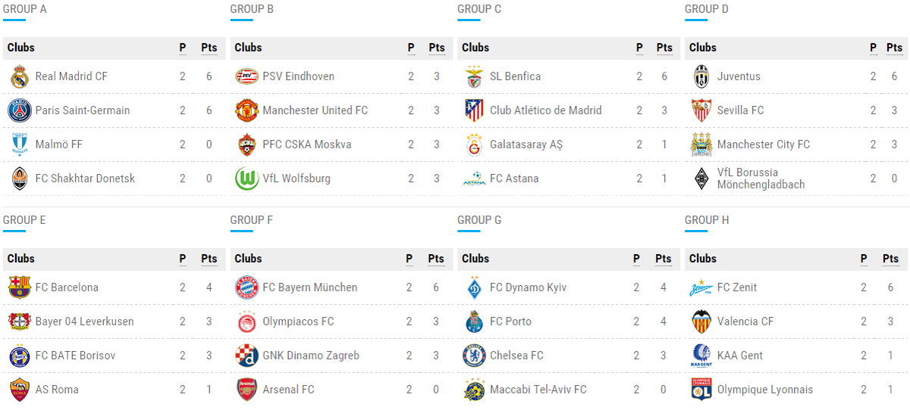

Stats & Analytics
Bettify provides historical team stats, head-to-head records, and market-implied metrics so users can make informed decisions.
Example metrics
- Team form: last 10 matches (W/D/L)
- Head-to-head: last 5 meetings
- Market implied probability trends

Data first
Clear charts and exportable CSVs help analysts backtest strategies and compare market prices vs. model probabilities.